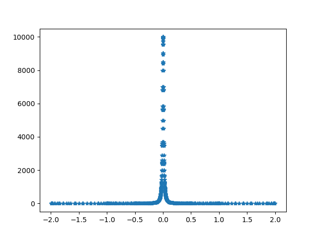
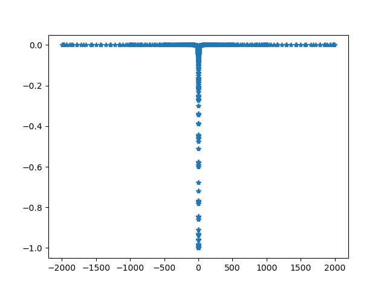

\(F(\rho, z)\) 是一个光滑，并且在正负无穷快速decay到时0,的函数，比如 \(F(\rho, z) = 1/(z^2 + 1)\)。我们想要计算
\[ \lim_{\rho\to 0} \frac{\partial}{\partial\rho}\left[\rho \int_{-\infty}^{+\infty} \frac{F(\rho, z)}{\rho^2 + z^2}\mathrm{d}z\right] \]其中的积分
\[ \int_{-\infty}^{+\infty} \frac{F(\rho, z)}{\rho^2 + z^2}\mathrm{d}z \]可以在 \(\rho\to 0\) 处展开
\[ \int_{-\infty}^{+\infty} \frac{F(\rho, z)}{\rho^2 + z^2}\mathrm{d}z = \frac{\pi}{\rho}F(0, 0) + C_0 + C_1 \rho + C_2\rho^2 + \cdots \]其中第一项
\[ \lim_{\rho\to 0}\int_{-\infty}^{+\infty} \frac{F(\rho, z)}{\rho^2 + z^2}\mathrm{d}z =\lim_{\rho\to 0}\int_{-\infty}^{+\infty} \frac{F(\rho, z)}{\rho}\frac{\rho}{\rho^2 + z^2}\mathrm{d}z =\int_{-\infty}^{+\infty} \frac{F(\rho, z)}{\rho}\pi\delta(z)\mathrm{d}z = \frac{\pi}{\rho}F(0, 0) \]代回原式后得
\[ \lim_{\rho\to 0} \frac{\partial}{\partial\rho}\left[\rho \int_{-\infty}^{+\infty} \frac{F(\rho, z)}{\rho^2 + z^2}\mathrm{d}z\right] = C_0 \]也就是说，我们想要的就是 \(C_0\)。但这在数值上如何计算呢？我们可以把发散的部分
\[ \lim_{\rho\to 0}\int_{-\infty}^{+\infty} \frac{F(\rho, z)}{\rho^2 + z^2}\mathrm{d}z = \int_{-\infty}^{+\infty} \frac{F(0, z)}{ z^2}\mathrm{d}z = \frac{\pi}{\rho}F(0, 0) \]减去，就得到
\[ \lim_{\rho\to 0} \frac{\partial}{\partial\rho}\left[\rho \int_{-\infty}^{+\infty} \frac{F(\rho, z)}{\rho^2 + z^2}\mathrm{d}z\right] = \int_{-\infty}^{\infty}\left[ \frac{F(0, z)}{z^2} - \frac{F(0, 0)}{z^2}\right]\mathrm{d}z \]这样我们就可以做数值计算了。
例
比如\(F(\rho, z) = 1/(z^2 + 1)\)时，
\[ \int_{-\infty}^{\infty}\left[ \frac{1}{z^2}\frac{1}{z^2 + 1} - \frac{1}{z^2}\frac{1}{0^2 + 1}\right]\mathrm{d}z = \int_{-\infty}^{\infty} \frac{-1}{z^2 + 1} \mathrm{d}z = -\pi \]import matplotlib.pyplot as plt
import numpy as np
from scipy.integrate import quad
def quad_recorded(func, *args, **kwargs):
"""
use scipy.integrate.quad, but return the results with additional
information "nc" and "vc".
Returns:
inte_res: the return of scipy.integrate.quad
nc: the points calculated
vc: the calculated functiona values
"""
def func_recorded(x, node_container, value_container):
res = func(x)
node_container.append(x)
value_container.append(res)
return res
nc = []
vc = []
inte_res = quad(lambda x: func_recorded(x, node_container=nc,
value_container=vc),
*args, **kwargs)
idx = np.argsort(np.array(nc))
nc = np.array(nc)[idx].tolist()
vc = np.array(vc)[idx].tolist()
return inte_res, nc, vc
def f(r, z):
return 1/(1 + z**2)
def foo(r, z):
return f(r, z)/(r**2 + z**2)
# check the first term in expansion
r = 0.01
res, nc, vc = quad_recorded(lambda z: foo(r, z), -2, 2, points=[0])
plt.plot(nc, vc, '*')
print('numeric:', res)
print('analytic:', np.pi/r*f(0, 0))
plt.savefig('first-term.png', transparent=True)
plt.clf()
# calculate the Hadamard finite part
def fini(z):
return f(0, z)/z**2 - f(0, 0)/z**2
res, nc, vc = quad_recorded(fini, -2000, 2000, points=[0])
plt.plot(nc, vc, '*')
# print('numeric:', res)
# print('analytic:', np.pi/r*f(0, 0))
print(res)
plt.savefig('finite-part.png', transparent=True)
numeric: (310.9760738639882, 9.137428740868536e-07)
analytic: 314.1592653589793
(-3.140592653672964, 4.381553441406457e-11)


致谢
- F Yang and R Qi